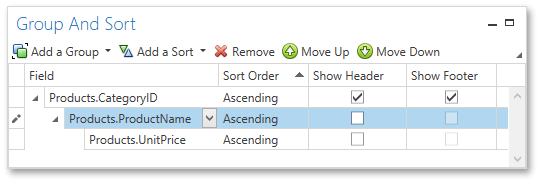

Group and Sort Panel
The Group and Sort Panel allows you to quickly apply grouping and sorting to report data.

Note
If a report is not bound to a data source, the Group and Sort Panel is inactive.
To create a new sorting or grouping criterion, click the Add a Sort or Add a Group buttons, respectively. Then, select the desired data source field in the invoked drop-down list.

After adding the grouping criterion, the Group Header band is automatically created. You can manually specify whether to display the corresponding Group Header and Group Footer using the Show Header and Show Footer check boxes.
You can choose the sorting mode (ascending or descending) or disable sorting in the Sort Order drop-down list.
The Group and Sort Panel also allows you to change the precedence of multiple grouping and sorting criteria using the Move Up and Move Down buttons.
To remove a grouping or sorting criterion, select it and click the Remove button.